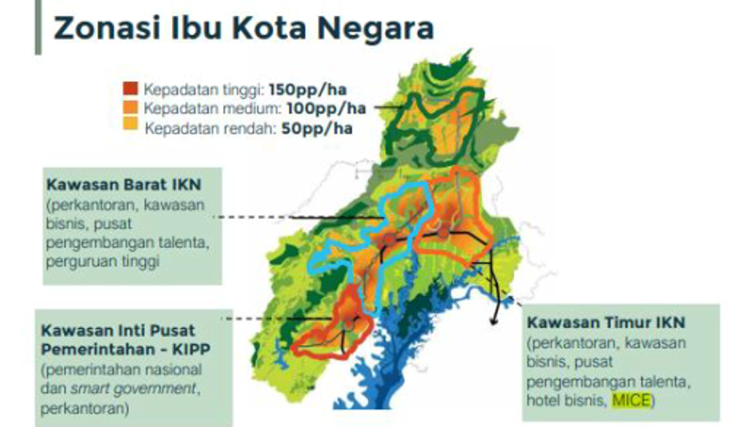
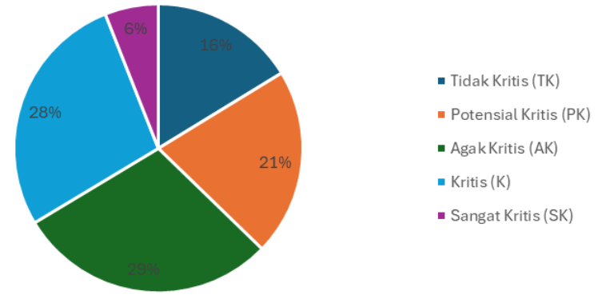

Lahan kritis merupakan lahan yang telah mengalami degradasi parah sehingga fungsi ekologisnya terganggu. Lahan kritis di Ibu Kota Negara (IKN) perlu dikelola dengan baik untuk memastikan keberlanjutan lingkungan hidup. Upaya rehabilitasi lahan kritis melibatkan penanaman kembali vegetasi, pengelolaan air, dan praktik pengelolaan tanah yang berkelanjutan.
Selain itu, penting untuk melibatkan komunitas lokal dalam upaya rehabilitasi lahan kritis. Partisipasi masyarakat dapat membantu memastikan keberhasilan jangka panjang dari proyek-proyek rehabilitasi. Edukasi dan pelatihan tentang pengelolaan lahan yang berkelanjutan juga merupakan kunci untuk mengurangi risiko lahan kembali menjadi kritis di masa depan.
Ibu Kota Nusantara (IKN) adalah ibu kota masa depan Indonesia yang rencananya akan diresmikan pada 17 Agustus 2024, bersamaan dengan perayaan hari kemerdekaan Indonesia ke-79. Pada tanggal 17 Januari 2022, Menteri Perencanaan Pembangunan Nasional Suharso Monoarfa secara resmi mengumumkan bahwa nama ibu kota negara baru adalah Nusantara. Nama ini dipilih karena melambangkan kesatuan dan keragaman bangsa Indonesia.IKN direncanakan akan menggantikan Jakarta yang telah menjadi ibu kota sejak 1961. IKN terletak di dua kabupaten di Kalimantan Timur, yaitu Kabupaten Kutai Kartanegara dan Kabupaten Penajam Paser Utara. Secara geografis, IKN terletak pada 0°45' LU - 1°11' LU dan 113°49' BT - 117°02' BT. Dasar hukum pendirian IKN adalah Undang-Undang Nomor 3 Tahun 2022 tentang Ibu Kota Negara. Undang-undang ini disahkan oleh Dewan Perwakilan Rakyat (DPR) pada tanggal 18 Januari 2022.
Gambar di atas menunjukkan zonasi IKN
.
Luas IKN adalah 2.561 km², yang terdiri dari 1.961 km² kawasan inti dan 600 km² kawasan penyangga. Kawasan inti akan menjadi pusat pemerintahan dan kegiatan ekonomi, sedangkan kawasan penyangga akan menjadi kawasan hunian dan industri.
Pembangunan IKN menghadapi beberapa permasalahan, antara lain: Konflik lahan, Perubahan iklim, bencana seperti Banjir, dan Kesejahteraan Masyarakat.Pemerintah telah berupaya untuk mengatasi permasalahan tersebut, antara lain dengan Melakukan pengadaan tanah secara sukarela, Melakukan mitigasi perubahan iklim dan mitigas bencana, Membangun sistem drainase yang memadai, dan Meningkatkan kesejahteraan Masyarakat.
Analisis lahan kritis merupakan proses penilaian tingkat kerentanan lahan terhadap kerusakan atau degradasi. Analisis ini penting dilakukan untuk mengetahui kondisi lahan dan potensi risiko kerusakannya. Pembangunan Ibu Kota Nusantara (IKN) merupakan proyek besar yang akan berdampak pada lingkungan dan masyarakat di sekitarnya. Analisis lahan kritis dapat digunakan untuk mengidentifikasi daerah-daerah yang rentan terhadap erosi dan mengembangkan strategi mitigasinya, seperti penanaman pohon dan pembuatan terasering. Analisis lahan kritis dapat membantu pemerintah untuk mengidentifikasi lahan-lahan yang memiliki potensi untuk dimanfaatkan secara optimal. Dengan demikian, pembangunan IKN dapat dilakukan dengan lebih efisien. Oleh karena itu, diperlukan analisis lahan kritis untuk memastikan bahwa pembangunan IKN dilakukan secara berkelanjutan dan tidak menimbulkan dampak negatif terhadap lingkungan.
Gambar Hasil Analisis Lahan Kritis di IKN